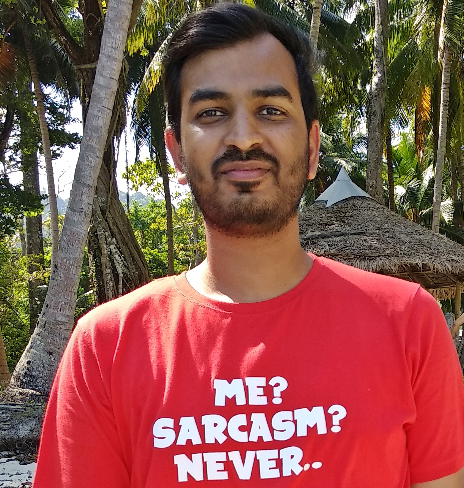

Current Students
D Ayyappa Raja
d.ayyappa@igib.in

Ayyappa did his masters in Microbial Gene Technology from Madurai Kamaraj University. He is interested in deciphering molecular mechanisms that equip epigenetic modulators to perform diverse functions. He work towards understanding the role of histone variants in melanocyte fate decisions using zebrafish and stem cell as model systems.
S J Yogaspoorthi
yogaspoorthi@igib.in

Spoorthi did her Masters in Biotechnology from VIT, Vellore. She studies the cellular and molecular mechanisms that regulate
melanocyte migration during development and regeneration.
She uses a variety of tools and techniques including gene expression analyses, transgenics, gene manipulation,
in-vitro cell migration assays and extensive imaging techniques to catch melanocytes on the move.
She is a big fan of medical thrillers and her favourite author is Robin Cook. She also enjoys cross-words,
cooking and binge watching.
Shaunak A Burse
shaunak.burse@igib.in

Shaunak did his masters in Biotechnology from Institute of Bioinformatics and Biotechnology,Savitribai Phule Pune University (2015). He joined the lab in 2015 and is currently running in his 5th year.
He is interested in the field of Mitochondria and RNA metabolism and is trying to understand the nucleo-mitochondrial
translational coupling.
Other than academics, he likes reading Japanese comic books (aka Manga) and listening to music.
Madeeha Ghazi
madeeha.ghazi@igib.in

Madeeha did her Masters in Zoology from Hindu College, University of Delhi and joined the lab in 2016.
She is trying to understand pigmentation and UV induced nuclear and mitochondrial DNA damage and repair in melanocytes,
using B16 Pigmentation Oscillator
and mouse as model systems. She is specifically interested in uncovering the role Interferon-gamma signalling
(identified as a negative regulator of pigmentation in our lab) in both pigmentation and UV-induced DNA Damage Response
in melanocytes.
Her other selective interests include teaching, reading, playing basketball and table tennis.
Ayush Aggarwal
ayush.aggarwal@igib.in
Ayush did his B.E, specialised in Biotechnology, from N.S.I.T. Delhi in 2015. He joined the lab as a Project Fellow in
October 2015 and worked towards understanding
regulation of fatty acid metabolism in mycobacterium spp. He joined as a PhD Student in August 2017. He is using a mix of
informatics and experimental biology to identify the drivers of melanocyte state transitions in different scenarios.
He loves to travel and engage in exciting adventure activities. He also loves to explore the vast virtual world of
gaming during his free time. You can check out his
Twitter and
LinkedIn profiles to know more.
Babita Sharma
babita.sharma@igib.res.in

Babita did her bachelors from Delhi University, North Campus and masters from Central University of Punjab. She joined the lab in 2018 and is intrigued by the mechanisms and molecular phenomenons that govern the cellular development and specificity. She is interested deciphering the molecular mechanisms underlying development and specification of pigment cells from Neural crest cells. Apart from academics, she is a movie and music buff.
Chetan Mishra
chetan.mishra@igib.res.in

Chetan did his Bachelor's in Biochemistry from Deshbandhu College, University of Delhi, and Master's in Biotechnology from Jamia Millia Islamia, New Delhi. His current interest is to understand the various functions played by immune cells during pigmentation. Apart from working in the lab, he likes singing and reading DC comics.
Techinal Staff


Collaborators


Past Students
Dr. Shivangi Khanna

Scientist B at HTAIn Secretariat
Department of Health and Research
Dr. Vishvabandhu Gotherwal

Executive Officer
Serum Institute Pvt. Ltd.
Dr. Ritika Grover

Employed at
Reckitt Benckiser (India) Ltd.